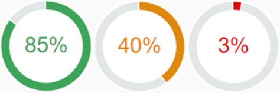
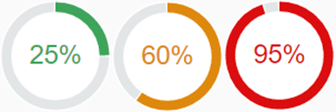

Smart Radial Micro Chart
The sap.ui.comp.smartmicrochart.SmartRadialMicroChart control creates an sap.suite.ui.microchart.RadialMicroChart control based on OData metadata.
For more information about this control, see the API Reference and the sample in the Demo Kit.
By using the chartType property Donut of the UI.Chart annotation the corresponding SmartRadialMicroChart control is rendered. The entitySet attribute needs to be specified to use the control. The attribute is used to fetch metadata and annotation information from the given default OData model. Based on this, the RadialMicroChart UI is created. As the other SmartMicroCharts, the sap.ui.comp.smartmicrochart.SmartRadialMicroChart control also uses the OData metadata annotations to determine the binding paths and values inside the chart.
Associated Labels
For information on how the control provides Title, Description and UnitOfMeasure values retrieved from the annotations, see the Title, Description and UnitOfMeasure values in the Smart Area Micro Chart documentation.
In addition, the Smart Radial Micro Chart supports a FreeText value.
This can be annotated by the term Label . For more
information, see the API Reference.
. For more
information, see the API Reference.
Binding
-
If the chartBindingPath is provided, the control will be bound relatively to it. For example, the chartBindingPath can be a navigation property.
-
If chartBindingPath is not provided, the control will be bound absolutely to the entitySet.
Criticality
The color of the chart can be controlled by the Criticality property either directly or by criticality calculation. For the sap.ui.comp.smartmicrochart.SmartRadialMicroChart control, there are two options for setting the color of the RadialMicroChart by using its valueColor property:
- by setting it directly via the Criticality property of the UI.DataPoint annotation
- with the criticality calculation using the CriticalityCalculation property of the UI.DataPoint annotation
Using the first option, the user can bind the property to a path in the application's model. The criticality is then mapped to a valueColor:
<PropertyValue Property="Criticality" Path="Criticality"/>
The mapping is done as follows:
|
Criticality |
ValueColor |
|---|---|
|
Neutral |
Neutral |
|
Positive |
Good |
|
Critical |
Critical |
|
Negative |
Error |
In the second option, the criticality can be calculated using customer-defined thresholds.
|
Property |
Type |
Sample Values |
|---|---|---|
|
DeviationLowValue |
Negative |
10 |
|
ToleranceLowValue |
Critical |
45 |
|
ToleranceHighValue |
Critical |
55 |
|
DeviationHighValue |
Negative |
80 |
With the ImprovementDirection property the thresholds can determine the valueColor. For sap.ui.comp.smartmicrochart.SmartRadialMicroChart the Maximize and Minimize directions are supported:
-
ImprovementDirection: Maximize
With the Maximize direction, it is calculated the higher the value the more the circle color trends to green or the more positive is its status. Depending on the relevant thresholds (DeviationLowValue and ToleranceLowValue), there are appropriate certain points where the color changes. Reflecting the sample data above, values lower than 10 will be shown in red color, values lower than 45 but higher than 10 are displayed in orange color and all values bigger than 45 are shown in green color.
 -
ImprovementDirection: Minimize
With theMinimize direction, it is calculated the lower the value the more the circle color trends to green or the higher the value the more negative is its status. This direction uses the ToleranceHighValue and DeviationHighValue thresholds. Reflecting the sample data above, values higher than 80 will be shown in red color, values lower than 80 but higher than 55 are displayed in orange color and all values lower than 55 are shown in green color.
